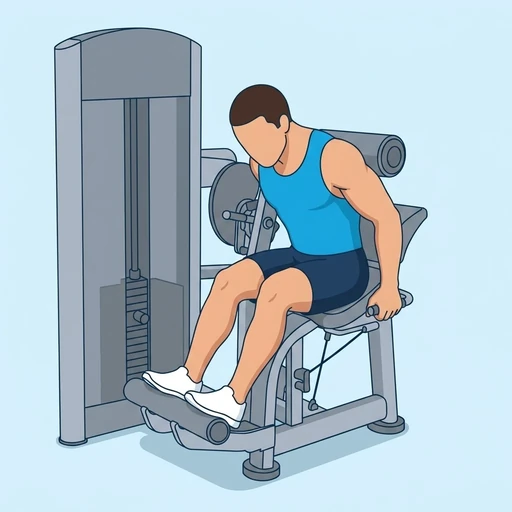
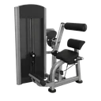

Machine Back Extension
A seated machine isolation exercise for the lower back: with the hips and legs held in place, the torso is driven backwards against a padded lever to extend the spine against a weight stack.
Back · Back Extension Machine · Beginner


Muscles worked by the Machine Back Extension
Primary
Secondary
Also called: erector spinae, spinal erectors, lower back muscles, back extensors.
Equipment

Back Extension MachineAlso called: lower back machine, hyperextension machine, seated back extension, lumbar extension, roman chair.
How to do the Machine Back Extension
- Sit in the back extension machine with your feet flat on the foot platform and the roller pad set behind your upper back, just below the shoulder blades.
- Grip the handles at your sides and let your torso come forward into a slight flexion — this is the starting position.
- Push back against the pad by extending your spine until your torso is leaning back and your lower back is fully contracted.
- Pause briefly at full extension, then return to the starting position under control, resisting the weight stack on the way back.
- Repeat for the desired number of reps.
Form tips
- Set the pad across your upper back just below the shoulder blades — too high and it presses on your neck, too low and you lose range of motion.
- Extend with your lower back rather than throwing your head and shoulders backwards, and keep both directions slow.
- Stop at a neutral, fully extended trunk instead of forcing the spine past it, and start light — the lower back responds better to controlled reps than to heavy loads.
At a glance
| Body part | Back |
|---|---|
| Category | Strength |
| Force type | Pull |
| Mechanic | Isolation |
| Difficulty | Beginner |
| Equipment | Back Extension Machine |
| Goals | Hypertrophy, Rehabilitation |
| Tags | Knee safe, No axial load, Lower back safe, Shoulder safe |
| MET | 5.0 (metabolic equivalent, for calorie estimates) |
| Unilateral | No |
| Bodyweight | No |
| Dataset id | machine-back-extension |
Machine Back Extension in German & Spanish
| German | Rückenstrecker an der Maschine |
|---|---|
| Spanish | Extensión de Espalda en Máquina |
Descriptions, instructions and tips ship in all three languages in the JSON.
Related exercises
Exercise data (JSON)
The record below is exactly what exercises.json ships for this exercise — names, descriptions, instructions and tips in English, German and Spanish.
{
"id": "machine-back-extension",
"name_en": "Machine Back Extension",
"name_de": "Rückenstrecker an der Maschine",
"name_es": "Extensión de Espalda en Máquina",
"description_en": "A seated machine isolation exercise for the lower back: with the hips and legs held in place, the torso is driven backwards against a padded lever to extend the spine against a weight stack.",
"description_de": "Eine Isolationsübung für den unteren Rücken im Sitzen: Hüfte und Beine bleiben fixiert, während der Oberkörper gegen ein gepolstertes Hebelpolster nach hinten gedrückt und die Wirbelsäule gegen den Gewichtsblock gestreckt wird.",
"description_es": "Un ejercicio de aislamiento sentado para la zona lumbar: con la cadera y las piernas fijas, el torso empuja hacia atrás contra un rodillo acolchado y extiende la columna venciendo la placa de pesas.",
"category": "strength",
"force_type": "pull",
"mechanic": "isolation",
"difficulty": "beginner",
"equipment": "back_extension_machine",
"body_part": "back",
"primary_muscles": [
"erector_spinae"
],
"secondary_muscles": [
"gluteus_maximus",
"hamstrings"
],
"goals": [
"hypertrophy",
"rehabilitation"
],
"tags": [
"knee_safe",
"no_axial_load",
"lower_back_safe",
"shoulder_safe"
],
"variation_group": "back-extension",
"is_unilateral": false,
"is_bodyweight": false,
"instructions_en": [
"Sit in the back extension machine with your feet flat on the foot platform and the roller pad set behind your upper back, just below the shoulder blades.",
"Grip the handles at your sides and let your torso come forward into a slight flexion — this is the starting position.",
"Push back against the pad by extending your spine until your torso is leaning back and your lower back is fully contracted.",
"Pause briefly at full extension, then return to the starting position under control, resisting the weight stack on the way back.",
"Repeat for the desired number of reps."
],
"instructions_de": [
"Setz dich in die Rückenstreckmaschine, die Füße flach auf der Fußplatte, und stelle das Polster so ein, dass es knapp unterhalb der Schulterblätter am oberen Rücken anliegt.",
"Greif die seitlichen Griffe und lass den Oberkörper leicht nach vorn kommen — das ist die Ausgangsposition.",
"Drück gegen das Polster nach hinten, indem du die Wirbelsäule streckst, bis der Oberkörper zurückgelehnt ist und der untere Rücken voll angespannt arbeitet.",
"Halte kurz in der vollen Streckung und komm dann kontrolliert zurück in die Ausgangsposition, während du dem Gewicht entgegenarbeitest.",
"Wiederhole für die gewünschte Anzahl an Wiederholungen."
],
"instructions_es": [
"Siéntate en la máquina de extensión de espalda con los pies apoyados en la plataforma y ajusta el rodillo para que quede sobre la parte alta de la espalda, justo por debajo de los omóplatos.",
"Agarra las manijas laterales y deja que el torso venga ligeramente hacia delante: esta es la posición inicial.",
"Empuja hacia atrás contra el rodillo extendiendo la columna hasta que el torso quede inclinado hacia atrás y la zona lumbar esté totalmente contraída.",
"Haz una pausa breve en la extensión completa y regresa a la posición inicial de forma controlada, resistiendo el peso durante el recorrido.",
"Repite el número de repeticiones deseado."
],
"tips_en": [
"Set the pad across your upper back just below the shoulder blades — too high and it presses on your neck, too low and you lose range of motion.",
"Extend with your lower back rather than throwing your head and shoulders backwards, and keep both directions slow.",
"Stop at a neutral, fully extended trunk instead of forcing the spine past it, and start light — the lower back responds better to controlled reps than to heavy loads."
],
"tips_de": [
"Setz das Polster knapp unter die Schulterblätter — zu hoch drückt es in den Nacken, zu tief verlierst du Bewegungsumfang.",
"Streck aus dem unteren Rücken heraus, statt Kopf und Schultern nach hinten zu werfen, und bleib in beide Richtungen langsam.",
"Hör bei neutral gestrecktem Oberkörper auf, statt die Wirbelsäule darüber hinaus zu drücken, und fang leicht an — der untere Rücken mag saubere Wiederholungen lieber als viel Gewicht."
],
"tips_es": [
"Coloca el rodillo justo por debajo de los omóplatos: más arriba presiona el cuello y más abajo pierdes recorrido.",
"Extiende desde la zona lumbar en lugar de lanzar la cabeza y los hombros hacia atrás, y mantén lento el movimiento en ambos sentidos.",
"Detente con el torso extendido en posición neutra en lugar de forzar la columna más allá, y empieza con poco peso: la zona lumbar responde mejor a repeticiones controladas que a cargas altas."
],
"met": 5.0,
"images": {
"flat": {
"start": "images/flat/machine-back-extension-start.webp",
"peak": "images/flat/machine-back-extension-peak.webp"
}
}
}Fetch just this exercise
const { exercises } = await fetch(
"https://exercise-dataset.com/exercises.json"
).then(r => r.json());
const ex = exercises.find(e => e.id === "machine-back-extension");Free for personal and commercial in-app use with attribution (“Exercise data by RepDB”) — see the license and ready-made attribution snippets. Redistributing the data as a dataset or API is not permitted.